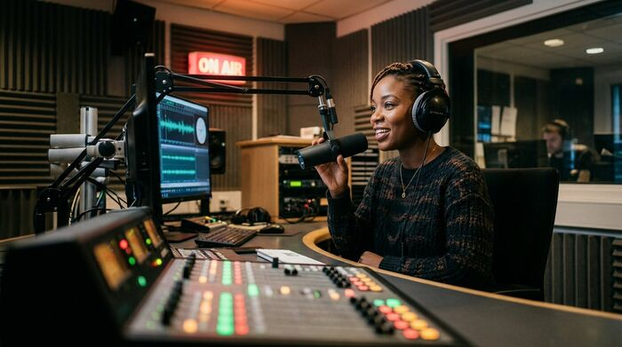

News
The Shs 2.4 trillion question Parliament cannot postpone
A supplementary spending request has reopened an old argument about how Uganda counts its money — and who gets to see the books.
A supplementary spending request has reopened an old argument about how Uganda counts its money — and who gets to see the books.
Reported, verified, and worth your time
A week after enforcement teams cleared the walkways of Kikuubo, a fragile standoff has settled over the city's busiest trading streets.
A strong crop and firm prices have lifted earnings to an all-time high, but growers say the gains stop at the first buyer.
A stoppage-time header settled a match that swung four times and left Namboole hoarse.
with Amina Nakimuli · 96.4 FM Kampala
The budget, the flood warnings and the Cranes' five-goal night

Markets, money and the hustle that keeps them moving.
A strong crop and firm prices have lifted earnings to an all-time high, but growers say the gains stop at the first buyer.
The games, the graft and the glory.
A stoppage-time header settled a match that swung four times and left Namboole hoarse.
Documentaries, explainers and the stories that need pictures
Music, film, fashion and the culture in between.
A field recording of Kampala traffic became the most recognisable hook of 2026. Its maker is still riding to the studio.
The programme is dominated by East African work, including six features making their debut in the city they were shot in.
Streaming has taken the sound abroad. The money, the rights and the management are still being worked out at home.
Argument, analysis and the occasional provocation
“Our newsrooms must learn to listen”
We are excellent at broadcasting and less good at hearing. That is a business problem as much as a democratic one.
“The budget is not the problem. The plumbing is.”
Every year we debate the number and ignore the pipes that decide whether it reaches a classroom.
“A city that works for the people who sell on its pavements”
Kampala does not have a street trading problem. It has a market design problem.